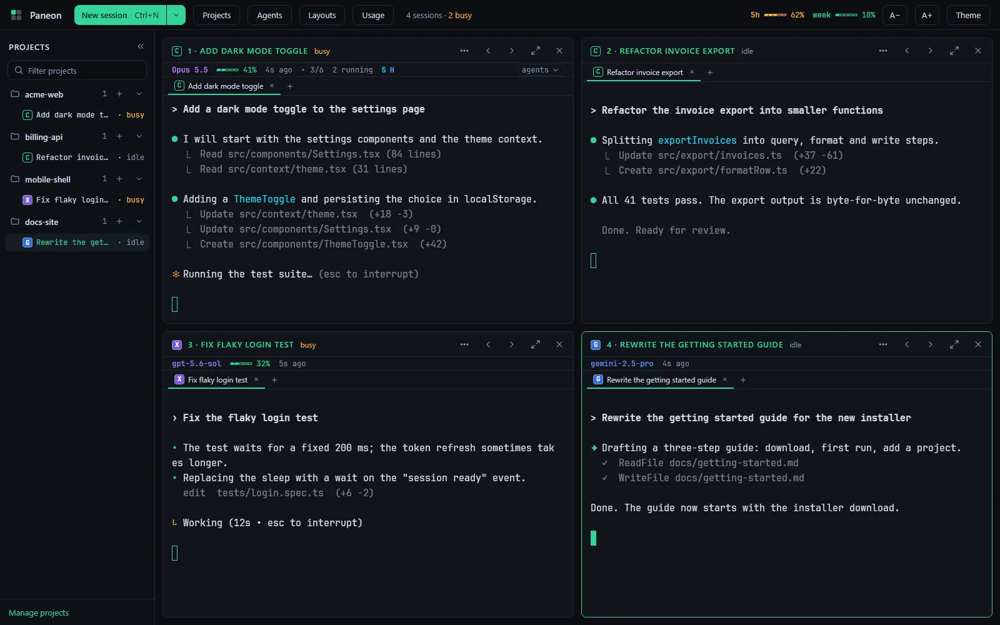
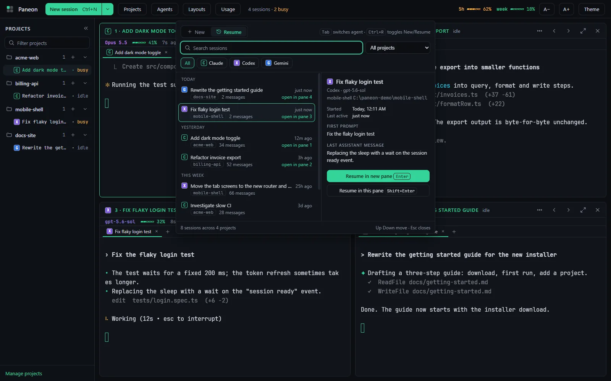
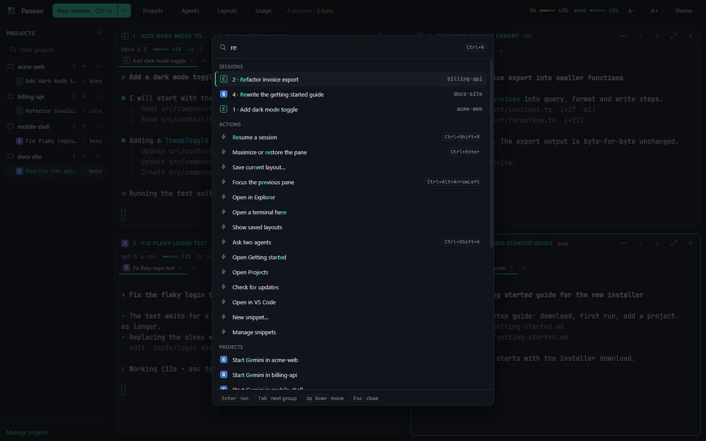
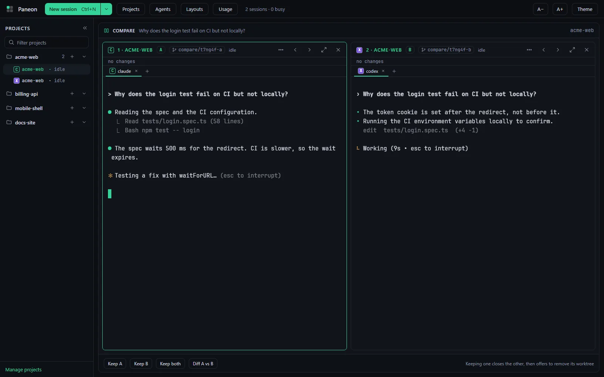
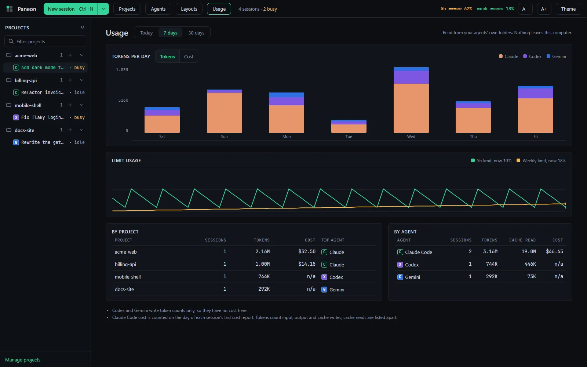
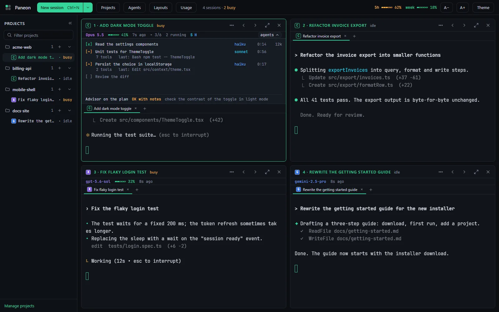

For Claude Code, Codex CLI and Gemini CLI
Every AI coding agent, one readable window.
Run Claude Code, Codex and Gemini side by side in large, readable terminals, one pane per task.

Works with
- Claude Code
- Codex CLI
- Gemini CLI
Your own installs and sign-ins. Paneon never handles credentials.
See it work
Real screenshots from the app, with sample projects.




Built for running several agents at once

Run
- Three agents in one gridUp to 6 real terminals, laid out for you. Maximize any pane.
- The paneon commandStart, resume and open layouts from the terminal you already use.
- Saved layouts and snippetsRestore a whole setup by name. Insert snippets with Alt+1 to Alt+9.
- ThemesEight themes with contrast checks and an optional background image.
Switch
- Resume any sessionCtrl+Shift+R lists earlier sessions of all three agents.
- Command paletteCtrl+K finds sessions, projects, snippets and layouts.
- Ask two agentsOne prompt, two worktrees, two answers to compare.
- Continue in another agentHand a session over with an editable summary.
Stay informed
- Needs-you alertsAn amber border and a notification when a pane waits on you.
- Usage viewTokens by day, project and agent, plus limit history.
- In-app updatesThe installed build updates itself while sessions keep running.
- Everything localNo account and no telemetry. Nothing leaves your machine.
How it works
Install
Run the installer or the portable exe. Sign in once to each agent CLI you use, in any terminal.
Add projects
Pick a folder and a default agent. A short first-run setup shows which CLIs it found.
Start sessions
Press Ctrl+N, or run
paneon .in a folder. Each agent runs in its own pane.Stay on top
Glance at status, plans and context. Come back when a pane asks for you.
The paneon command
The installer adds it to your PATH. Open a new terminal and drive Paneon from where you already work.
# add this folder and start its agent
paneon .
# start a specific agent on a project
paneon start billing-api --agent codex
# pick up the newest session
paneon resume --lastDownload Paneon
Latest release, Windows 10/11 x64. Free under the MIT licence.
SmartScreen. The builds are not code signed, so Windows may show "Windows protected your PC". Choose More info, then Run anyway.
Requirements. Windows 10 or 11 (x64) and the agent CLIs you want to use: Claude Code, Codex CLI, Gemini CLI. Node.js 20+ is only needed to install Codex and Gemini from inside Paneon.
Stop hunting for the right window.
Put every agent where you can read it.